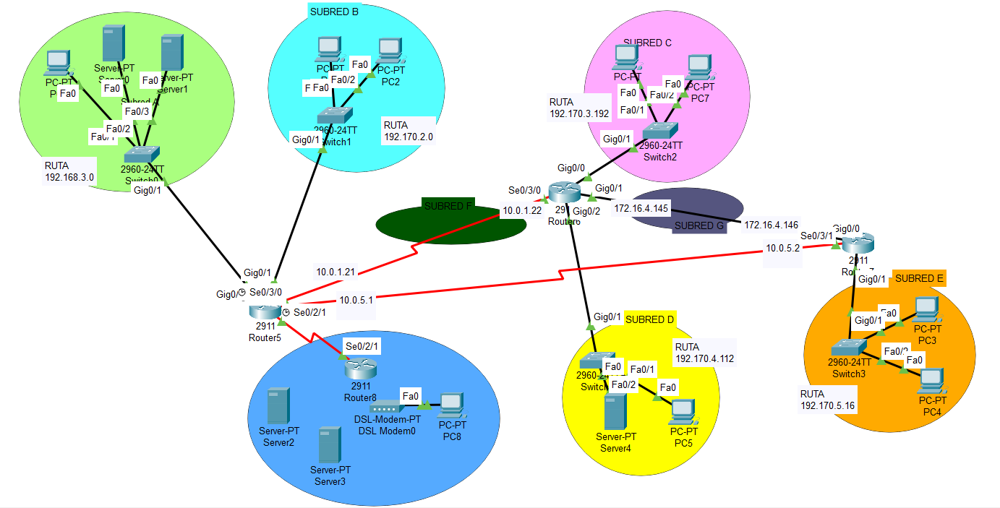

Enrutamiento Estático y ACLs (ITB Holding)
Configuración de la infraestructura de red para la empresa "ITB Holding". El proyecto abarca la interconexión de sedes mediante rutas estáticas y flotantes, así como el aseguramiento de la red interna usando Listas de Control de Acceso (ACLs).

💡 Desafíos Técnicos Resueltos
Este escenario simula un entorno crítico con redundancia y seguridad. Puedes descargar el archivo fuente o desplegar los detalles.
-
🔀
Enrutamiento y Redundancia
Configuración de rutas estáticas en R1, R2 y R3. Se implementó una Ruta Flotante por la Subred H para garantizar conexión si cae la Subred F.
-
🌐
Salida a Internet
Configuración de Default Route en el router R1 hacia el ISP, permitiendo acceso web a toda la empresa.
-
🛡️
Seguridad (ACLs)
Implementación de políticas de firewall estrictas:
- ❌ Bloqueo total del host PCC2 (Subred C).
- 🔒 La Subred A solo permite tráfico HTTP (80) y DNS (53).
- 🚫 La Subred E tiene bloqueada la navegación web.